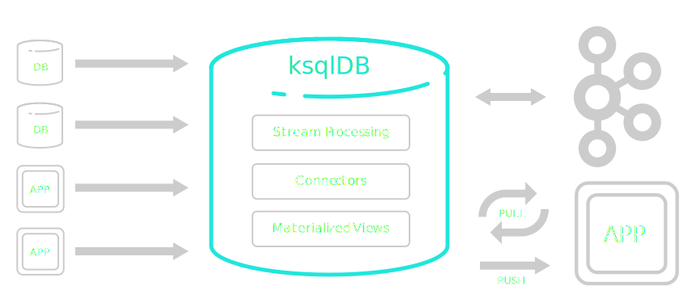

Hello, ksqlDB.
What problem does it solve?
Traditional stream processing architectures are complex, to say the least.

These architectures resemble a big, clunky ETL pipeline.
ksqlDB consolidates this complex with one abstraction.
What can I build with it?

Materialized cache
Streaming ETL pipeline
Event-driven microservice
Materialized cache
Build and serve incrementally updated stateful views.
Materialized cache, without ksqlDB
Chain many distributed systems together.
Materialized cache, with ksqlDB
Run just two systems. One for compute, and one for storage.

Streaming ETL pipeline
Manipulate in-flight data to connect arbitrary sources and sinks.
Streaming ETL pipeline, without ksqlDB
Coordinate many disparate systems.

Streaming ETL pipeline, with ksqlDB
A slender architecture for managing the end-to-end flow of your data pipeline.

Event-driven microservices
Trigger changes based on observed patterns of events in a stream.
Event-driven microservice, without ksqlDB
It's up to you to blend your stream processing, state, and side-effects logic in a maintainable way.

Event-driven microservice, with ksqlDB
Isolate complex stateful operations within ksqlDB’s runtime. Your app stays simple because it is stateless.
Let's start with the basics.
Declaring a stream
Inserting rows
Transforming a stream
Filtering rows out of a stream
Combining many operations into one
Rekeying a stream
Processing with multiple consumers
Real-time materialized views
Materializing a view from a stream
Automatic repartitioning
Replaying from changelogs
Replaying from a compacted topic
Materializing the latest values
Chaining materialized views
Fin